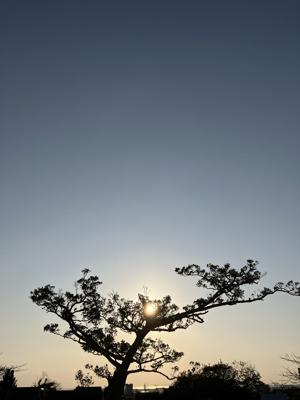
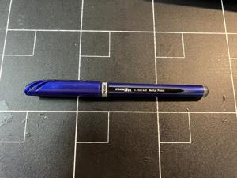
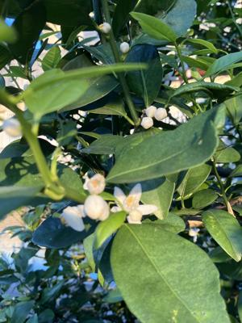

うるがいの話 ある日
最新: インクが出ない【うるがいの話 ある日】とは 一日だけのプログです
『うるがいの話』の最新一日だけのプログで、通信料が少なく経済的だ。カニの画像をクリックすると全ての日付が載る『うるがいの話』サイトを表示します
|
|
【うるがいの話】 うるがい(ｳﾙｶﾞｲ urugai)とは、『もずくがに』の名前でとても大きくなります。 |
|---|---|
|
|
【カミマヤーの話】 猫のことを方言でマヤーといいます。カミマヤー（kamimayaa）とは、神の猫のことです。 |
|
【たながぁの音楽】 たながぁ（ﾀﾅｶﾞｰ tanagaa）とは手長えびのことで、何種類かあり大きいのは車 エビぐらいになります。 |

|
【ぶながぁの話】 ぶながぁ(ﾌﾞﾅｶﾞｰ bunagaa)とは、赤い髪の毛、赤い身体、そして身長は１ｍ２０ｃｍ ぐらい、川の蟹を食べているの目撃された。場所は沖縄県国頭郡大宜味村のと ある村僕の隣近所に住んでいる爺さんから、聞いた話です。 |
|
|
【ギーマの話】 ギーマ(giima)とは、山原の里山に咲くスズランに似た、 花を付けます。実は食べられます、 気が付くと口の周りが紫になっています。 |
2026年03月17日 (火）インクが出ない
15:08

１５年前に資格を取るため買った高めのペン、インクがでません
マ、長いのであたりまか。でも、あと３つほどあるのです。勿体
無い。ネットで調べると、ライターで先を炙るをいいらしい。や
ってみた、数回間を置いてあぶったらインクが出ました。しばら
くすると、また出なくなりますがまた炙る、使えます。

このインク、筆記の試験対応のため書きやすいと、先行して資格
試験を勉強していたイサ君（故人）が教えてくれたペンです。
残りもあぶって使おうと思います。難儀して合格した資格、いま
は何の役にもたっていません。

あ、そういえば今日は県立高校の合格発表、子供が落ちたあの日
の事は忘れません。１０時過ぎ、緑色の学生服を着た男の学生が
母親と一緒に歩いてました、彼らの顔から多分合格したのでしょ
う。